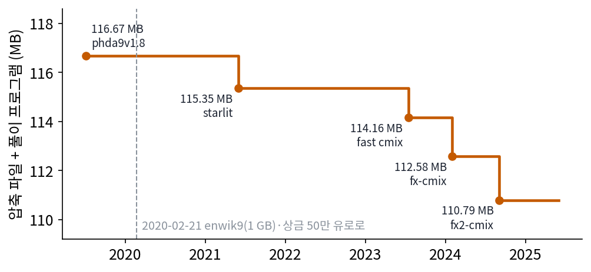
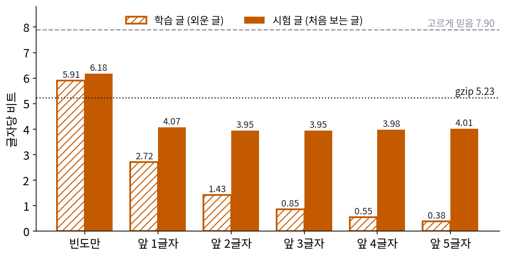
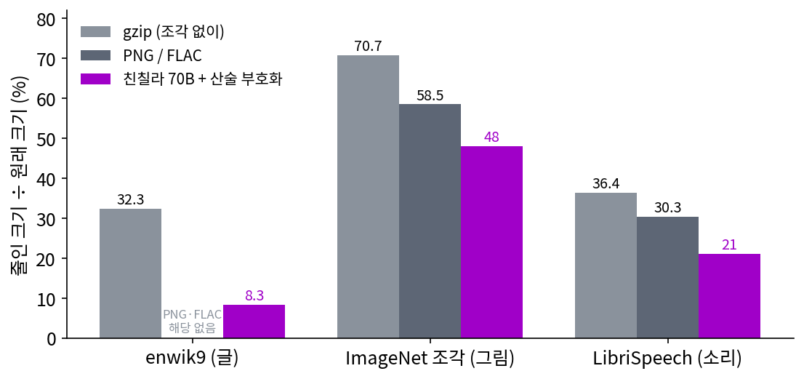

바이트당 비트: 언어 모델의 손실은 부호 길이다
산술 부호화를 거치면 예측기가 압축기가 되고, 부호 길이는 예측기가 실제로 온 글자에 준 확률 q의 −log₂를 더한 것보다 많아야 2비트 길다. 그렇다면 언어 모델의 학습 기록에 찍히는 손실도 비트 수와 같은 것이어야 한다. 그런데 학습 기록은 손실을 nat(자연로그로 센 정보의 단위)으로 적고, 논문은 퍼플렉서티로 적고, 압축 대회는 바이트당 비트로 적는다. 셋은 같은 양일까? 그리고 「다음 글자를 더 잘 맞히면 더 짧게 줄인다」는 말은 손으로 쓴 진짜 글에서도 숫자로 확인될까?
역사: 위키백과를 줄이는 내기
2006년 8월 허터(Marcus Hutter)는 자기 돈으로 상금 5만 유로를 걸고 대회를 열었다. 영어 위키백과의 앞 100MB(enwik8)를 누가 더 작게 줄이느냐는 내기다. 무손실 압축(되살리면 똑같은 압축)이어야 하고, 압축 파일에 풀어 주는 프로그램의 크기까지 더해 잰다. 2020년 2월 21일에는 대상을 1GB(enwik9)로, 상금 총액을 50만 유로로 각각 열 배씩 늘렸다. 앞 기록보다 1% 줄일 때마다 5천 유로를 준다.
위키백과를 잘 줄이려면 다음 글자를 잘 맞혀야 하고, 그러려면 문법뿐 아니라 세상에 대한 지식까지 알아야 한다는 것이 내기의 논리다. 대회를 연 사람들은 글 압축과 인공지능이 같은 문제라고 적었다. 다만 정해진 계산 시간과 메모리 안에서 풀어야 해서 큰 언어 모델은 이 대회에 맞지 않고, 최근 기록은 여러 예측기의 확률을 섞어 산술 부호화에 넣는 cmix 계열 압축기들이 세웠다. 압축을 잘하면 이해한 것이냐는 반론은 이 책 전체가 붙드는 물음이라, 여기서는 내기의 논리만 적어 둔다.

빵집 이야기를 네 예측기로 줄이기
대회의 숫자를 믿기 전에 작은 글에서 직접 재 보자. 이 책을 위해 동네 빵집의 하루를 다룬 글을 직접 썼다. 1,661글자를 학습 글로 쓰고, 같은 빵집의 일요일을 다룬 286글자를 시험 글로 따로 떼어 두었다. 시험 글은 예측기가 한 번도 보지 않은 글이다. 글자는 띄어쓰기와 문장 부호까지 두 글에 나온 239가지다(이 목록은 보내는 쪽과 받는 쪽이 미리 안다고 둔다).
「빈도만」 예측기는 학습 글에서 글자마다 나온 횟수로 확률을 정하고, 「앞 k글자」 예측기는 같은 앞 k글자 뒤에 무엇이 왔는지 센 횟수로 정한다(k차 마르코프 사슬). 학습 글에 없던 문맥에서도 확률이 0이 되지 않게, 앞 3글자 예측기는 앞 2글자 예측기에 기대는 식으로 짧은 문맥에 기대며, 기대는 세기(2)는 시험 글을 보기 전에 정했다. 확률은 합이 65,536인 정수 빈도로 바꿔 쓴다(계산은 sources/code-length/s4_text.py).
| 줄이는 방법 | 학습 글, 글자당 비트 | 시험 글, 글자당 비트 | 시험 글의 실제 부호 | 시험 글, 바이트당 비트 |
|---|---|---|---|---|
| 원래 글 (UTF-8) | 재지 않음 | 19.52 | 5,584비트 | 8.000 |
| 239가지를 고르게 믿음 | 7.90 | 7.90 | 2,260비트 (이상값) | 3.237 |
| 빈도만 | 5.91 | 6.18 | 1,768비트 | 2.533 |
| 앞 1글자 | 2.72 | 4.07 | 1,165비트 | 1.669 |
| 앞 3글자 | 0.85 | 3.95 | 1,131비트 | 1.620 |
| gzip (학습 글을 앞에 붙여 늘어난 만큼) | 재지 않음 | 5.23 | 1,496비트 | 2.143 |
| gzip (시험 글만) | 재지 않음 | 11.30 | 3,232비트 | 4.630 |
한글 한 글자는 UTF-8로 3바이트라서 원래 글은 글자당 19.52비트다. 앞 글자를 하나만 보아도 시험 글의 비트가 6.18에서 4.07로 크게 준다. 시험 글 첫 문장에서 「는」 다음의 띄어쓰기는 빈도만 보는 예측기에게 1.99비트였지만 앞 1글자 예측기에게는 0.30비트였고, 「빵」 다음의 「집」은 7.70비트에서 2.05비트로 줄었다. 실제 부호는 예측기가 매긴 −log₂ q의 합보다 늘 2비트 안쪽으로 길었고(앞 3글자 예측기는 합 1,130.23비트, 부호 1,131비트), 받는 쪽 계산으로 되살린 글은 원래 글과 한 글자도 다르지 않았다.
gzip은 앞에 나온 글자 줄을 다시 가리키는 방식이라, 짧은 시험 글만 주면 글자당 11.30비트로 고르게 믿을 때보다도 길다. 학습 글을 앞에 붙이고 늘어난 만큼만 세면 5.23비트다.

막대를 앞 5글자까지 늘려 보면 이상한 점이 보인다. 학습 글의 비트는 0.85, 0.55, 0.38로 계속 줄어드는데, 시험 글은 앞 2글자와 앞 3글자에서 3.95로 가장 낮고 앞 4글자 3.98, 앞 5글자 4.01로 도리어 늘어난다. 긴 문맥을 보는 예측기는 학습 글을 거의 외워서 짧게 적지만, 그렇게 외운 것은 처음 보는 일요일 이야기에는 잘 통하지 않는다. 어느 예측기가 더 「잘 배운」 것인지는 학습 글의 비트만으로는 알 수 없다.
위의 표와 막대는 모두 비트를 글자 수나 바이트 수로 나눈 것이다. 언어 모델의 학습 기록에 찍히는 손실도 같은 양을 다른 단위로 적은 것이다. 토큰마다 정답에 준 확률의 −ln을 평균 낸 것이 교차 엔트로피 손실이고, 자연로그를 쓰므로 단위는 nat이다. 1 nat은 1/ln 2 = 1.4427비트다. 토큰 하나는 글자 몇 개일 수도, 바이트 몇 개일 수도 있다. 그래서 원래 글의 바이트 수로 나눈 값도 함께 쓴다.
손실 𝓛을 ln 2로 나누면 토큰 하나를 산술 부호화로 적는 데 드는 비트가 되고, 거기에 토큰 수를 바이트 수로 나눈 값을 곱하면 원래 글 한 바이트를 적는 데 드는 비트가 된다. 원래 글 한 바이트에 드는 이 비트 수를 바이트당 비트 (bits per byte)라 한다. 원래 글은 바이트당 8비트이므로, 바이트당 비트를 8로 나누면 줄인 크기가 원래 크기의 몇 분의 일인지가 나온다. 퍼플렉서티(perplexity) e^𝓛은 같은 손실을 거듭제곱으로 되돌린 값이다. 퍼플렉서티가 무엇을 세는지는 아래 문제 10에서 찾아본다. 손실, 퍼플렉서티, 바이트당 비트는 단위만 다른 한 양이다.
ML에서: 친칠라는 PNG 보다 그림을 잘 줄인다
델레탕 외의 「언어 모델링은 압축이다」는 딥마인드의 언어 모델 친칠라(매개변수 700억 개, 주로 글로 학습)에 산술 부호화를 붙여 글(enwik9), 그림(ImageNet 그림 조각), 소리(LibriSpeech 낭독 음성)를 1GB씩, 2,048바이트 조각마다 따로 줄였다. 논문의 표 1에 따르면 친칠라는 enwik9를 원래 크기의 8.3%로 줄였고(gzip은 조각으로 자르지 않고도 32.3%), 그림 조각을 48.0%, 소리를 21.0%로 줄여 그림 전용 압축기 PNG(58.5%)와 소리 전용 압축기 FLAC(30.3%)보다 작게 만들었다. 초록에는 그림 43.4%, 소리 16.4%로 표 1과 다르게 적혀 있지만, 어느 쪽이든 글로 배운 예측기가 그림과 소리에서도 전용 압축기를 앞선다.

그런데 친칠라의 압축률 8.3%에는 받는 쪽이 이미 친칠라를 가지고 있다는 가정이 숨어 있다. 같은 논문은 모델 자체의 크기(매개변수 하나에 2바이트)를 압축 결과에 더한 「고친 압축률」도 함께 실었는데, 그러면 친칠라의 압축률은 세 자료 모두 14,000%를 넘는다. 1GB를 줄이려고 140GB짜리 모델을 함께 보내야 하기 때문이다. 예측을 잘하는 모델이 짧게 적는 것은 맞지만, 모델을 적는 비트까지 세면 이야기가 달라진다.
문제 10. 예보관의 퍼플렉서티
날씨를 맑음, 흐림, 비, 눈 넷 가운데 하나로 예보하는 예보관이 나흘 동안 실제로 온 날씨에 준 확률이 0.8, 0.5, 0.25, 0.5였다. (가) 하루 평균 몇 비트인가? (나) 퍼플렉서티 2^(평균 비트)는 얼마이고 무슨 뜻인가? (다) 넷에 늘 0.25씩 주는 예보관과 비교하라.

비트는 0.322, 1, 2, 1이라서 평균 1.080비트예요. 퍼플렉서티는 2^1.080 = 2.115요.

2.115라는 숫자를 날씨 예보로 말하면 뭘까요?

음… 2.1일 동안 맞힌다?

넷에 늘 0.25씩 주는 예보관을 생각하면 돼. 매일 2비트고 퍼플렉서티는 2² = 4야. 넷 가운데 고르게 헷갈리는 사람은 4가 나오는 거지.

그러니까 2.115는 이 예보관이 매일 두 가지 남짓 가운데서 고르게 헷갈리는 사람만큼 헷갈린다는 뜻이야. 넷 가운데 둘쯤은 확실히 아닌 걸 아는 거고.

그래요. 퍼플렉서티는 「몇 면짜리 주사위만큼 헷갈리나」예요. 비트로는 1.080, 주사위로는 2.115, 같은 것을 다르게 적었을 뿐이에요.

사지선다 시험에서 공부를 좀 하면 보기 둘은 바로 지우고 남은 둘 중에 찍잖아요. 그때 제 퍼플렉서티가 2쯤이었던 거네요.
문제 11. 손실 2.0을 바이트당 비트로
어떤 언어 모델의 시험 글 손실이 토큰 하나에 2.0 nat이다. 이 모델의 토크나이저는 이 글에서 토큰 하나가 평균 4.0바이트다. (가) 토큰 하나에 몇 비트이고 퍼플렉서티는 얼마인가? (나) 바이트당 비트는 얼마이고, 이 모델에 산술 부호화를 붙이면 글은 원래 크기의 몇 %가 되는가?
2.0을 비트로 바꾸면… 2.0 × ln 2 = 1.386비트요.
1 nat과 1비트 중에 어느 쪽이 큰 단위예요?

e가 2보다 크니까 nat이 더 커요. 그럼 비트로 바꾸면 숫자가 커져야 하네요. 2.0 ÷ ln 2 = 2.885비트예요. 곱하고 나누는 걸 거꾸로 했어요.
퍼플렉서티는 손실이 nat이니까 e^2.0 = 7.389. 비트로 계산해도 2^2.885 = 7.389로 같아.
이 모델에 산술 부호화를 붙이면 원래 글 한 바이트에는 몇 비트가 들까요? 토큰 하나가 몇 바이트를 덮는지 생각해 봐요.
토큰 하나가 4바이트를 덮으니까 2.885 ÷ 4.0 = 0.721비트가 바이트 하나에 들어요. 원래는 바이트당 8비트였으니까 0.721 ÷ 8 = 9.02%예요. 손실 2.0이라는 숫자가 「원래 크기의 9%로 줄인다」는 말이었네요.
4.5 만점 학점과 4.3 만점 학점을 숫자 그대로 비교하면 안 되는 것처럼, nat과 비트도 단위를 맞춘 뒤에 비교해야 하네요.
문제 12. 토크나이저가 다른 두 모델
같은 시험 글에서 모델 A는 손실이 토큰 하나에 3.0 nat이고 토큰 하나가 3.5바이트, 모델 B는 손실 2.6 nat에 토큰 하나가 2.5바이트다. 어느 모델이 이 글을 더 짧게 줄이는가? 퍼플렉서티로 비교하면 어떻게 되는가?
손실이 낮은 B가 낫죠. 퍼플렉서티도 A가 e³ = 20.09, B가 e^2.6 = 13.46이라 B가 훨씬 낮아요.
두 모델이 글을 같은 크기로 자르고 있나요?
아니요. A는 토큰 하나가 3.5바이트, B는 2.5바이트예요. 같은 글이면 B가 토큰을 1.4배 많이 내요. 토큰 하나에 드는 비트가 적어도 토큰이 많으면 합은 클 수 있어요.
바이트당 비트로 바꿔 볼게요. A는 3.0 ÷ ln 2 ÷ 3.5 = 1.237, B는 2.6 ÷ ln 2 ÷ 2.5 = 1.500이에요. A가 더 짧게 줄여요! 손실은 B가 낮은데요.

그래요. 토큰당 손실과 퍼플렉서티는 「토큰 하나」라는 잣대에 매여 있어서, 토크나이저가 다르면 견줄 수 없어요. 원래 글의 바이트처럼 두 모델이 함께 쓰는 잣대로 나눠야 해요.

그래서 압축 대회나 「언어 모델링은 압축이다」 같은 논문이 바이트당 비트나 압축률로 적는 거군요. 원래 파일 크기는 토크나이저가 바꿀 수 없으니까요.
마트에서 라면 값을 봉지당이 아니라 그램당으로 보는 거네요. 큰 봉지가 봉지당은 비싸도 그램당은 쌀 수 있으니까요. 토큰이 봉지고 바이트가 그램이에요.